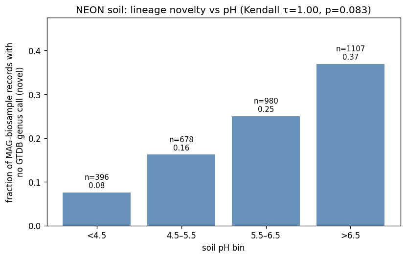
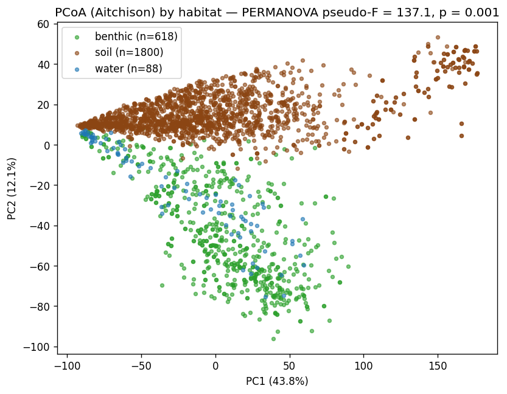
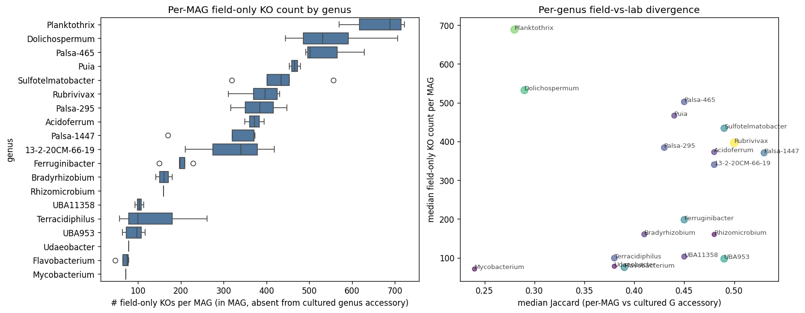
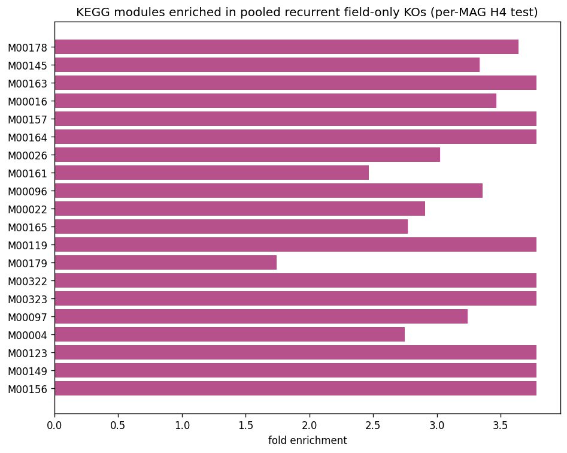

Soil pH drives novelty in the reverse direction — and reveals a cold-active enzyme niche
Chris Mungall · LBNL · ORCID 0000-0002-6601-2165
Three NMDC-rehosted NEON metagenome studies, all soil/water/benthic — bacterial & archaeal metagenomics only (no metaT/metaP/metabolomics).
| ID | Hypothesis | Verdict |
|---|---|---|
| H1 | Soil pH drives MAG lineage novelty | Supported direction reversed |
| H2 | Habitat-discriminating KOs enriched for biogeochemistry modules | Supported |
| H3 | Soil pH AND horizon each explain ≥5% of soil KO variance | Partial pH passes, horizon doesn't |
| H4 | Environmental MAGs carry accessory KOs absent from cultured pangenome | Supported per-MAG test |
Per-MAG-record analysis on 3,161 soil MQ+HQ MAG–biosample pairs with pH.
| Soil pH bin | n records | Novel fraction |
|---|---|---|
| < 4.5 (acid) | 396 | 7.6% |
| 4.5–5.5 | 678 | 16.2% |
| 5.5–6.5 | 980 | 25.0% |
| > 6.5 (neutral/alkaline) | 1,107 | 37.0% |
OLS on raw per-record data: slope = +0.079 / pH unit, p = 9.1 × 10⁻⁴⁷. 29.4-pp spread across the gradient.
Acidic peats were expected to be the novel-lineage reservoir. They aren't. Most parsimonious explanation: GTDB culture-mining bias — Acidobacteriota have been intensively cultured, so acidic-soil GTDB representation is mature; alkaline / neutral soils are under-mined.

| Factor | n | F | p | R² |
|---|---|---|---|---|
| pH bin (4 levels) | 1,700 | 32.5 | 0.001 | 5.4% ✓ |
| Horizon (O / M) | 1,800 | 40.5 | 0.001 | 2.2% ✗ |
Both highly significant; only pH clears the pre-registered 5% effect-size threshold.

For each MQ+HQ NEON MAG in a genus with ≥5 cultured KE pangenome reps, compare per-MAG KO content (via mags_list.members_id → gene_id join) to cultured accessory pangenome.


The M00322 (limonene degradation) enrichment looked like a striking finding. Per-step dissection of which KOs each MAG actually carries:
| Pathway class | Count | What it means biologically |
|---|---|---|
| GENERIC_ONLY | 43 | Carry only K00128 (NAD aldehyde dehydrogenase, housekeeping). False positive. Includes all 14 cyanobacterial MAGs. |
| LATE_ONLY | 15 | Carry K14731 (ε-lactone hydrolase). Process downstream lactones, can't initiate. Concentrated in soil Acidobacteriota. |
| PARTIAL | 2 | Entry + late, no diol step (both Bradyrhizobium). Need community partner. |
| OTHER / ENTRY_ONLY | 2 | Single Rubrivivax / 13-2-20CM-66-19 fragments. |
| FULL pathway | 1 | Mycobacterium MAG — but Mycobacterium is the established cultured limonene biocatalyst (van Beilen 2005). |
Module-level enrichment should be cross-checked with per-KO step assignment before drawing biology. Broad-substrate housekeeping enzymes (e.g., aldehyde dehydrogenase shared by dozens of pathways) can drive spurious module enrichment by themselves.
15 sub-Arctic palsa-peat Acidobacteriota MAGs carry K14731 (EC 3.1.1.83) that's absent from cultured pangenome accessory of their genus.
Targeted PubMed + bioRxiv + Scholar search (May 2026) returned zero hits coupling "cold-active" or "psychrophilic" with "lactone hydrolase" or EC 3.1.1.83.
68.62°N, −149.63°W · elev 782 m · pH 5.24 · O horizon · sub-Arctic palsa peatland
| Genus | K14731 MAGs |
|---|---|
| Sulfotelmatobacter | 4 |
| Palsa-465 | 3 |
| Palsa-1447 | 3 |
| Acidoferrum | 1 |
| 13-2-20CM-66-19 | 1 |
| Terracidiphilus | 1 |
| Rhizomicrobium | 1 |
| Palsa-295 / Rubrivivax / Puia | 1 each |
NEON Biorepository (ASU) archives the source biosamples. Enrichment cultivation at 5–10°C, pH 5, on lactone substrates as sole C source.
57% of NEON MetagenomeAnnotation workflows have rows in annotation_kegg_orthology. The gap is non-random.
| Habitat / genus class | Per-gene KO coverage | NB04b cohort outcome |
|---|---|---|
| Surface-water cyanobacteria (Planktothrix, Dolichospermum, Rubrivivax) | 100% | 27 / 27 MAGs analyzed |
| Benthic generalists (Ferruginibacter, Flavobacterium, UBA953) | ~85% | 16 / 19 MAGs analyzed |
| Soil acidobacteria (Sulfotelmatobacter, Palsa-465, Palsa-1447) | ~30% | 12 / 40 |
| Soil cultured genera (Mycobacterium, Bradyrhizobium, Acidoferrum) | ~10% | 5 / 65 |
| Soil unculturable / novel (Acidocella, BOG-234, Pseudolabrys, Pseudonocardia, Reyranella) | 0% | 0 / 28 — dropped entirely |
| Estimator | Median field-only KOs/MAG | Frac MAGs ≥ 10 field-only |
|---|---|---|
| Naive (observed, n = 73) | 371 | 100% |
| Inverse-coverage reweighted (effective n = 218) | 319 | 100% |
| Best-case imputation (missing = genus median) | 371 | 100% |
| Worst-case (missing = 0 field-only) | 0 | 29.7% |
H4b survives inverse-coverage reweighting and best-case imputation cleanly. Only an unrealistic worst-case scenario — every missing MAG would have been a cyanobacterial-style housekeeping artifact — drops the cohort-wide ≥10-field-only fraction below the 30% threshold.
Captured as a project-level pitfall in docs/pitfalls.md for future BERDL projects using per-gene NMDC tables.